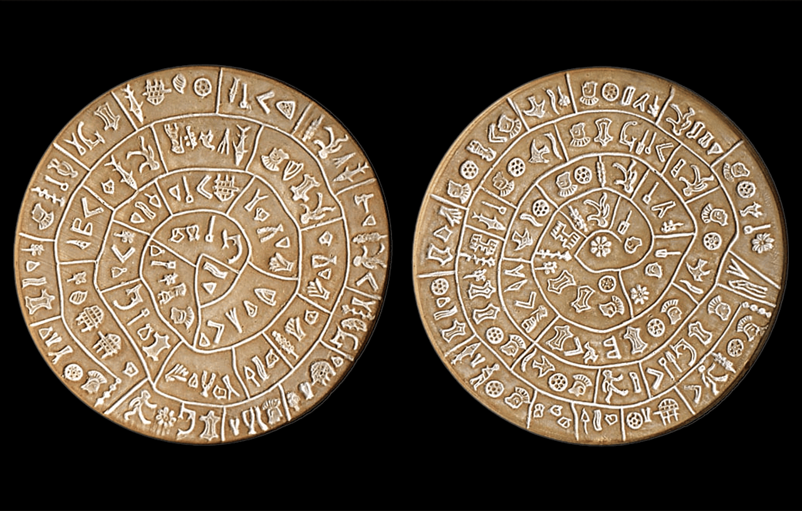
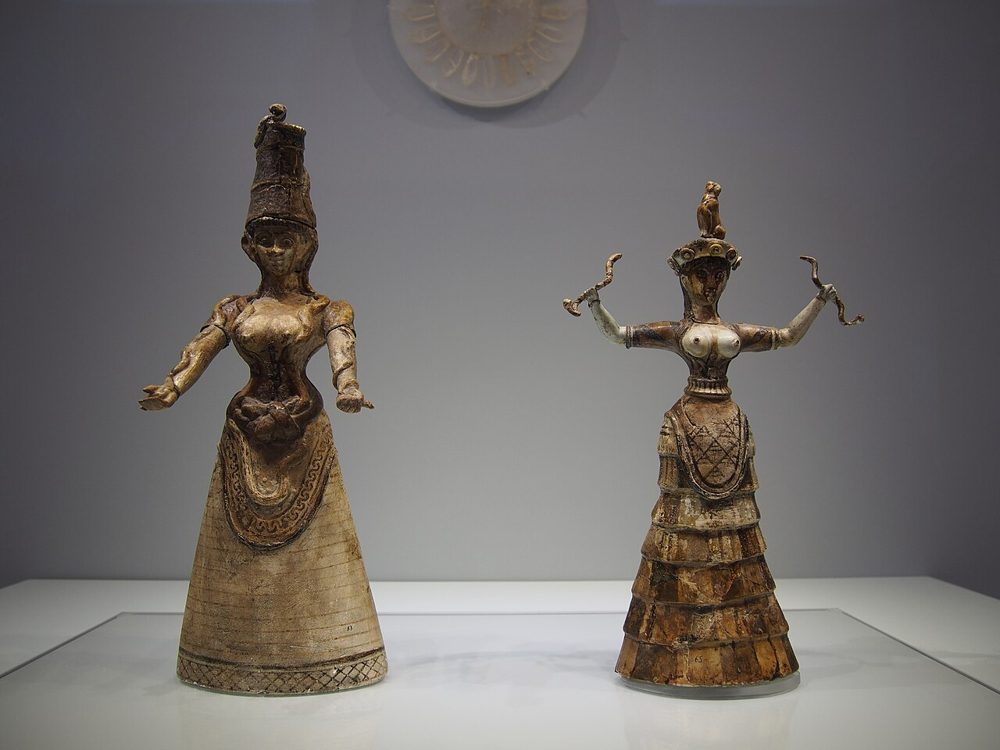
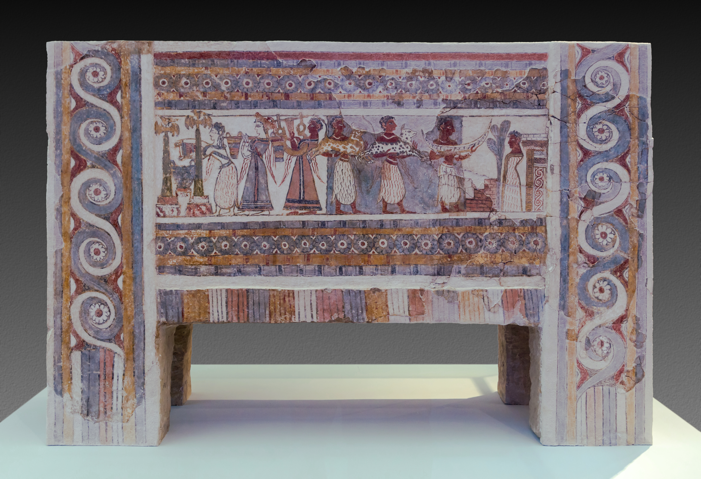

An enigmatic clay disc dated to \(\approx 1700\) BC, featuring 245 stamped symbols arranged
in a spiral. It remains one of archaeology's greatest undeciphered mysteries.

Exquisite faience figurines from the Palace of Knossos (c. 1600 BC) depicting bare-breasted women
holding snakes, which symbolize regeneration and the household.

A stunning limestone sarcophagus (c. 1370–1320 BC) painted with vivid scenes
of Minoan religious rituals, funeral offerings, and deities.